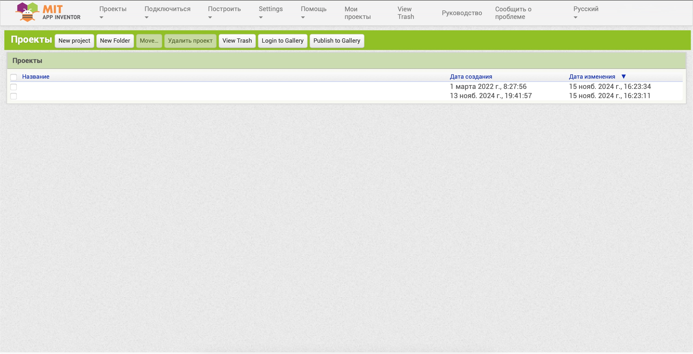
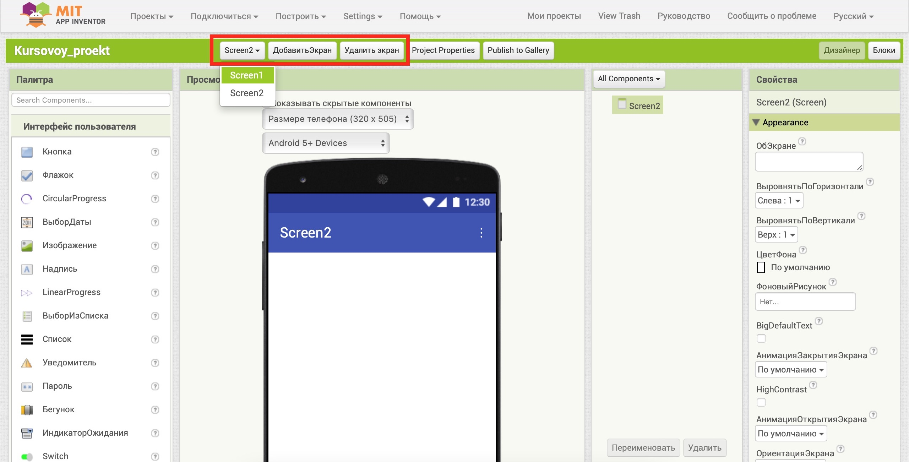
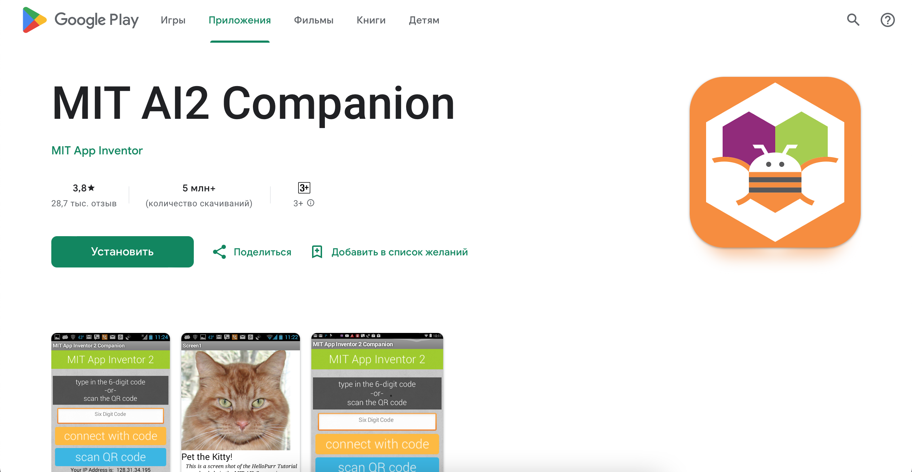
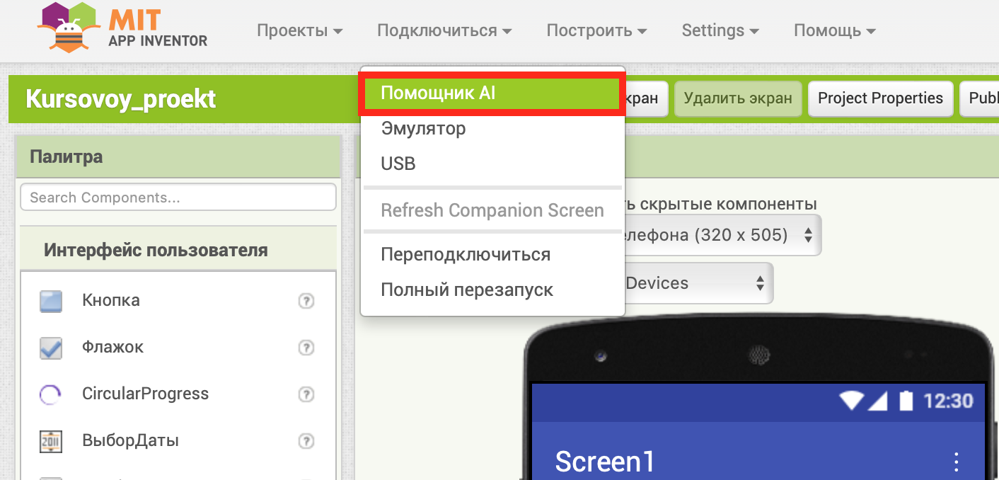
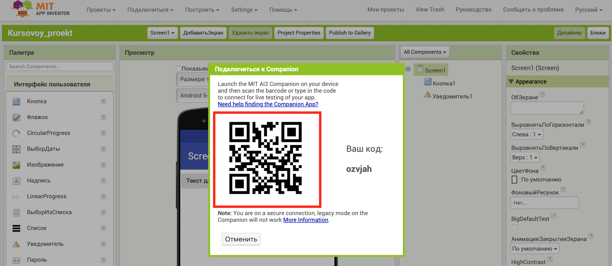
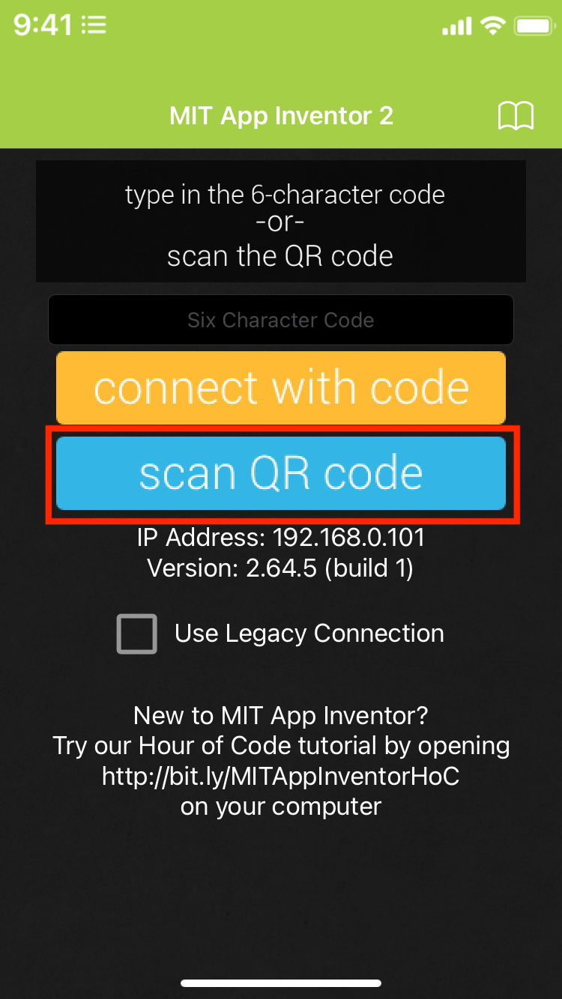
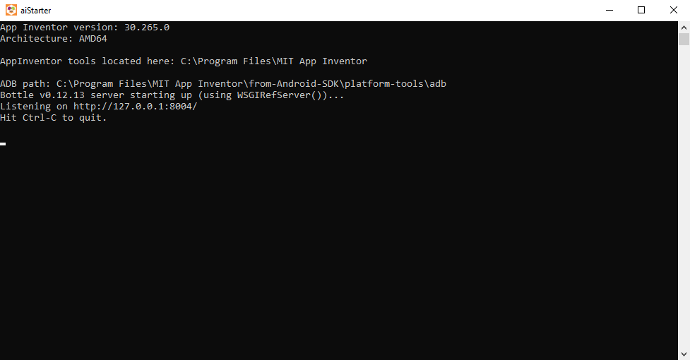
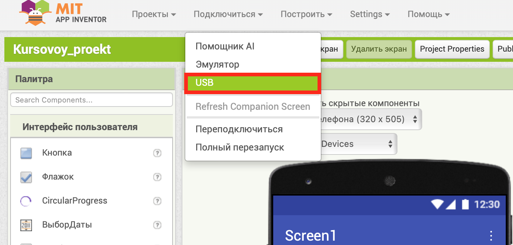
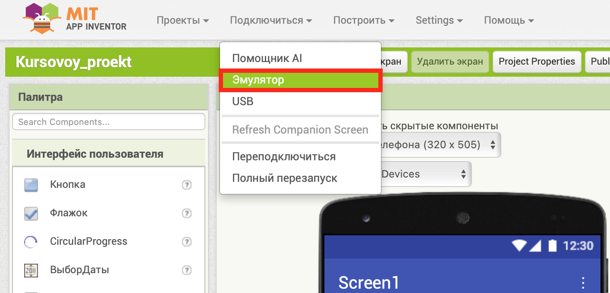
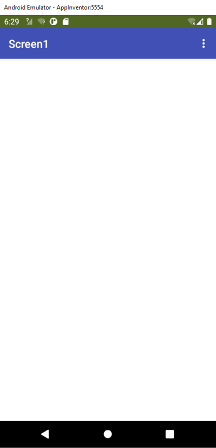

Введение в MIT App Inventor
Давайте разберемся, что делает MIT App Inventor уникальным инструментом для создания мобильных приложений, какие возможности он предоставляет и как можно использовать его для реализации своих идей.
Описание MIT App Inventor
MIT App Inventor — это облачная среда для визуального программирования приложений, в основном предназначенная для платформы Android. Она позволяет создавать приложения, используя блоки кода в визуальном интерфейсе. Работа в App Inventor требует только базовых знаний алгоритмизации и не требует знания Java или Android SDK.
Для работы необходимо наличие Google или Google Apps аккаунта. Ссылка на вход: MIT App Inventor
Интерфейс пользователя
После входа пользователь видит список своих проектов. Для создания нового проекта используется команда «Начать новый проект» в меню «Проекты». Проекты хранятся в папке «Мои проекты».
Режим "Дизайнер"
В режиме «Дизайнер» создается интерфейс приложения — размещаются кнопки, текстовые поля, изображения и другие компоненты. Интерфейс содержит:
- Палитра: содержит наборы компонентов для добавления в проект.
- Просмотр: область, где отображается внешний вид приложения.
- Компоненты: список компонентов, которые уже используются.
- Свойства: настройки для компонентов, такие как цвет, шрифт, изображения и др.
Экраны приложения
Приложение может содержать несколько экранов (до 10). Управление экранами осуществляется через команды «Добавить экран» и «Удалить экран».
Режим "Блоки"
Режим «Блоки» используется для программирования логики приложения с помощью визуальных блоков. Основные группы блоков:
- Управление
- Логика
- Математика
- Текст
- Массивы
- Переменные
- Процедуры
Загрузка и установка приложений
Тестирование и отладка происходит на мобильном устройстве. Для разработки рекомендуется использовать настольный ПК или ноутбук, а для отладки и тестирования - мобильное устройство с предустановленным приложением MIT App Inventor Companion, которое позволяет считывать QR код созданного вами мобильного приложения для установки его на ваше устройство.
Способы загрузки приложения на устройство:
- в исходном коде (файл c расширением .aia) Исходный код в формате .aia позволяет редактировать приложение. Исходный код генерируется со страницы проекта меню Проекты / Экспортировать выбранные проекты (.aia) на Мой компьютер.
- в виде исполняемого файла ( файл c расширением .apk) Файл приложения .apk генерируется в App Inventor в меню Построить – Приложение (сохранить .apk на компьютер). Файл .apk является исполняемым приложением, которое работает на устройстве.
- в виде QR - кода приложения Генерируется с помощью команды меню Построить - Приложение (создать QR код для скачивания .apk). Для считывания QR кода и установки приложения на мобильное устройство необходимо установить приложение AI2 Companion App из Google Play на мобильное устройство. При установке ваших приложений .apk на мобильное устройство, необходимо разрешить установку приложений из неизвестных источников (Настройки – Приложения – Неизвестные источники).
Способы тестирования приложения:
- Помощник AI
- USB
- Эмулятор
Если есть устройство с операционной системой Android и Wi-Fi соединением:
1. На мобильном устройстве загрузить и установить из магазина Google Play приложение MIT AI2 Companion App.
2. Подсоединить компьютер на котором вы работаете и мобильное устройство к одной Wi-Fi сети.
3. В MIT App Inventor открыть проект, который нужно протестировать, и выбрать в меню Подключиться – Помощник AI.
4. На экране компьютера появится QR код вашего приложения.
5. Запустить MIT Ai2 Companion на мобильном устройстве и нажать Scan QR code. Через некоторое время приложение появится на вашем устройстве.
1. Подготовить устройство для использования USB (Включить отладку по USB).
На Android устройстве, перейти в меню Настройки – Для разработчиков, и включить пункт меню Отладка USB.
На Android 4.2 и старше, Функция для разработчиков по умолчанию скрыта. Чтобы включить данную функцию, перейдите в меню Настройки – О телефоне и нажмите номер сборки семь раз. Далее необходимо вернуться к предыдущему экрану, чтобы найти меню Для разработчиков, в том числе "USB Debugging".
2. Подключить мобильное устройство к компьютеру Подключить Android устройство к компьютеру с помощью кабеля USB, убедиться, что устройство подключается как "запоминающее устройство", а не как "медиа-устройство".
На Android 4.2.2 и старше, при первом подключении мобильного устройства к компьютеру появится экран с сообщением Разрешить USB-отладку, для подключения его к компьютеру нажмите "OK"
3. Загрузить и установить специальное программное обеспечение App Inventor Setup Software
4. Запустить aiStarter
aiStarter будет запущен, если отображается следующее окно командной строки: 
5. В MIT App Inventor открыть проект, который нужно протестировать, и выбрать в меню Подключиться – USB.
Если устройства с операционной системой Android нет:
1. Загрузить и установить специальное программное обеспечение App Inventor Setup Software
2. Запустить aiStarter
aiStarter будет запущен, если отображается следующее окно командной строки:
3. Перейти в окно проекта в MIT App Inventor и выбрать меню Подключиться – Эмулятор.
Через некоторое время эмулятор с тестируемой программой будет запущен:
